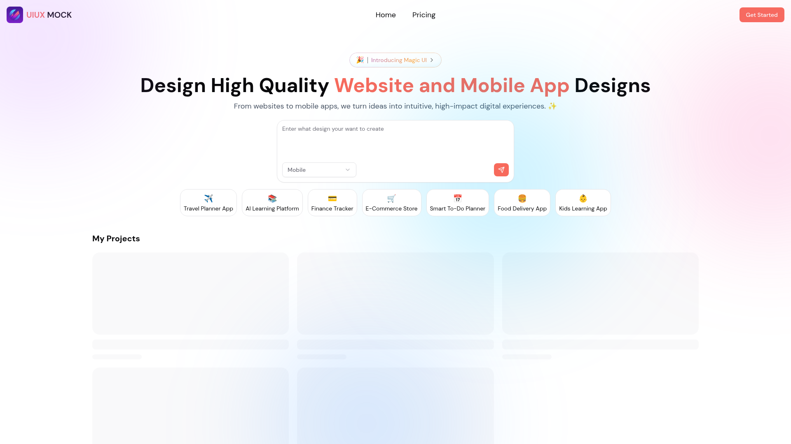

← All work

UI/UX Mockup Generator
Generate modern website and mobile app mockups across different industries using AI.
uiuxmockup.vercel.app
Overview
UI/UX Mockup Generator takes a short prompt describing a product or industry and produces a set of website or mobile app mockups. It's aimed at the early "what could this even look like" stage of a project, before anyone opens a design tool.
Features
- Prompt-driven mockup generation across multiple industries
- Separate flows for website and mobile app layouts
- Fast iteration — regenerate variations without starting over
Technology stack
Next.js
AI
SaaS
Challenges
- Getting consistent, usable layout output from a general-purpose model rather than one-off results
- Designing the SaaS shell (auth, plans, generation limits) around a feature that's inherently generative and unpredictable
Gallery
